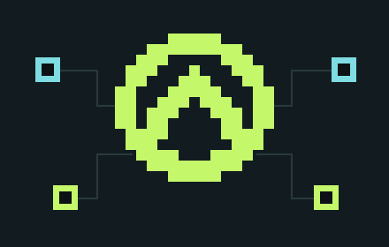

Testes com propósito
Estratégia por risco, automação e regressão nas camadas que importam para cada entrega.
Qualidade que acompanha o desenvolvimento. Riscos explicados, testes com propósito e evidências que ajudam você a decidir.

Uma proposta de trabalho que conecta
produto, desenvolvimento e qualidade.
Estratégia por risco, automação e regressão nas camadas que importam para cada entrega.
Validação de entregas geradas por agentes, fluxos no-code e documentação que evolui com o projeto.
Fronteiras de confiança, permissões e análise de vulnerabilidades com escopo e rastreabilidade.
Uma skill aberta para agentes de codificação. Entende o contexto, propõe verificações e explica o que foi observado.
Você pode pular uma etapa. A decisão fica registrada e a incerteza continua visível.
Explorar no GitHub ↗Escolha como representar a verificação:
Simulação local. Nenhum teste ou scanner é executado nesta página.
Oportunidades · Consultoria · Colaborações